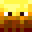

Modalità di gioco · 0.2.1
Ceppi e abilità
Confronta tutte e dodici le forme integrate e le loro tre abilità.
Punti di forza e di debolezza
| Ceppo | Il buono | Il cattivo |
|---|---|---|
| Più salute, armatura e danni, si rigenera al buio, immune alla Fame | 12% più lento, brucia al sole, non riesce a dormire; carne solo in forma intera | |
| Frecce più forti, visione notturna, immune al veleno e alla fame, cadute più morbide | Meno salute, le esplosioni fanno più male, bruciature al sole, non riesco a dormire | |
| Prende meno dalle esplosioni, più veloce, armatura extra, i mostri ti lasciano in pace | Paura dei gatti, il fuoco fa più male | |
| Si arrampica sui muri, cammina tra le ragnatele, salta più in alto, vede nel buio | Il fuoco fa più male, non posso indossare il casco dello stadio IV | |
| Passi su blocchi interi, più salute e danni, le frecce ti colpiscono di meno | L'acqua e la pioggia bruciano | |
| Nuota velocemente, respira e vede sott'acqua | Lento sulla terraferma, brucia al sole; nella sua forma completa si asciuga dopo tre minuti lontano dall'acqua | |
 Blaze | Il fuoco non può farti male dallo stadio III, le mosche dallo stadio IV, cadute più morbide | L'acqua e la pioggia ti bruciano e ti schiacciano, le frecce fanno più male |
| Corpo leggero, visione notturna, il volantino più veloce dello stadio IV | Meno salute, ustioni al sole, nessuna corazza sulle ali | |
| I raccolti crescono più velocemente intorno a te, vola dallo stadio IV, senti a malapena una caduta | Meno salute, solo cibi dolci, la pioggia ti avvilisce | |
| Più veloce, morde più forte, la carne cruda e marcia va bene | Solo carne, paura dei lama, il fuoco fa più male | |
| I Piglin ti trattano come uno di loro, non serve oro. Il fuoco fa meno male, più salute e danni | Non riesco a buttare via niente d'oro, ho paura degli zombi e dei piglin zombificati, più debole fuori dal Nether in piena forma | |
| Nuota velocemente e galleggia, branchie, visione subacquea chiara, punte che feriscono gli attaccanti, più armatura e salute | Saltella lentamente sulla terra, non riesce a vedere bene lì, e dallo stadio IV rimane senza aria senza acqua |
Chiavi e costi delle abilità
R si sblocca allo stadio II, V allo stadio III. L'abilità dell'apice su B richiede una forma completa e una ricerca al 100%. L'HUD mostra i tempi di recupero e le condizioni non soddisfatte. Un tentativo fallito non comporta alcuna spesa.
Blaze, Phantom e Bee possono volare dalla fase IV toccando due volte il salto. Il volo consuma la fame e la pioggia o l'acqua li sterminano.
Abilità per ceppo
| Ceppo | R | V | B (apice) |
|---|---|---|---|
| Dead Flesh: rigenerazione rapida e resistenza | Ground Slam: colpisce tutti intorno a te | L'Orda: gli zombi nelle vicinanze inseguono chiunque ti abbia ferito | |
| Dead Eye: guarda gli esseri viventi attraverso i muri | Volley: tre frecce | Arrow Storm: nove frecce | |
| Rilascio pressione: respinge tutti | Camouflage: pochi secondi di invisibilità | Detonazione: una grande esplosione che ti costa 4 HP e lascia intatti i blocchi | |
| Balzo: balzo in avanti | Venom Spit: avvelena un bersaglio | Bozzolo: rallenta e indebolisce un bersaglio | |
| Blink: teletrasportati dove stai guardando | Void Stare: rallenta e indebolisce un bersaglio | Void Collapse: trascina tutti dentro e li rallenta | |
| Water Surge: scatta sott'acqua | Risacca: trascina tutti dentro | La Marea: danneggia e rallenta chiunque si trovi intorno | |
| Blaze | Palla di fuoco | Fire Salvo: tre palle di fuoco | Inferno: incendia tutti |
| Battito d'ali: salta su e plana giù | Velo Notturno: invisibilità nell'oscurità | Immersione: bombarda in picchiata un bersaglio dal cielo | |
| Battito d'ali: salta su e fluttua giù | Pungiglione: veleno, costa mezzo cuore | Lo Sciame: le api vicine inseguono chi ti ha ferito | |
| Profumo: vedere gli esseri viventi attraverso i muri | Morso saltante: salta verso un bersaglio e morde | Il Branco: i lupi vicini inseguono chiunque ti abbia ferito | |
| Furia: forza e velocità | Carica: colpisci un bersaglio | Banda da guerra: i piglin vicini si uniscono (solo Nether) | |
| Sonar: guarda gli esseri viventi attraverso i muri | Raggio: un colpo laser dalla distanza | Maledizione dell'anziano: rallenta e indebolisce tutti intorno |